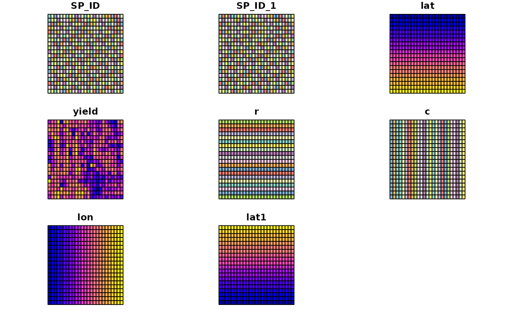

Mercer and Hall wheat yield data, based on version in Cressie (1993), p. 455.
Format
The format of the object generated by running data(wheat) is a three column data frame made available by Hongfei Li. The example section shows how to convert this to the object used in demonstrating the aple function, and is a formal class 'SpatialPolygonsDataFrame' [package "sp"] with 5 slots; the data slot is a data frame with 500 observations on the following 6 variables.
lat: local coordinates northings ordered north to south
yield: Mercer and Hall wheat yield data
r: rows south to north; levels in distance units of plot centres
c: columns west to east; levels in distance units of plot centres
lon: local coordinates eastings
lat1: local coordinates northings ordered south to north
Note
The value of 4.03 was changed to 4.33 (wheat[71,]) 13 January 2014; thanks to Sandy Burden; cross-checked with http://www.itc.nl/personal/rossiter/teach/R/mhw.csv, which agrees.
References
Mercer, W. B. and Hall, A. D. (1911) The experimental error of field trials. Journal of Agricultural Science 4, 107-132.
Examples
# \donttest{
if (requireNamespace("sp", quietly = TRUE)) {
library(sp)
data(wheat)
wheat$lat1 <- 69 - wheat$lat
wheat$r <- factor(wheat$lat1)
wheat$c <- factor(wheat$lon)
wheat_sp <- wheat
coordinates(wheat_sp) <- c("lon", "lat1")
wheat_spg <- wheat_sp
gridded(wheat_spg) <- TRUE
wheat_spl <- as(wheat_spg, "SpatialPolygons")
df <- as(wheat_spg, "data.frame")
row.names(df) <- sapply(slot(wheat_spl, "polygons"),
function(x) slot(x, "ID"))
wheat <- SpatialPolygonsDataFrame(wheat_spl, data=df)
}
# }
if (requireNamespace("sf", quietly = TRUE)) {
library(sf)
wheat <- st_read(system.file("shapes/wheat.gpkg", package="spData"))
plot(wheat)
}
#> Reading layer `wheat' from data source
#> `/home/runner/work/_temp/Library/spData/shapes/wheat.gpkg'
#> using driver `GPKG'
#> Simple feature collection with 500 features and 8 fields
#> Geometry type: POLYGON
#> Dimension: XY
#> Bounding box: xmin: 1.255 ymin: 1.35 xmax: 64.005 ymax: 67.35
#> Projected CRS: Undefined Cartesian SRS with unknown unit
